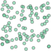
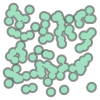
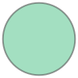

Shapely¶
Point¶
[1]:
from shapely.geometry import Point, MultiPoint
ランダムなポイントデータを作成
[2]:
import random
x_range = (139, 140)
y_range = (35, 36)
n_point = (100)
points = [Point(random.uniform(*x_range), random.uniform(*y_range)) for i in range(n_point)]
multi_point = MultiPoint([(random.uniform(*x_range), random.uniform(*y_range)) for i in range(n_point)])
[3]:
multi_point
[3]:

[4]:
multi_point.buffer(0.05)
[4]:

[5]:
polygons = [point.buffer(0.05) for point in points]
polygons[0]
[5]:

[9]:
dir(polygons[0])
[9]:
['__and__',
'__array_interface__',
'__bool__',
'__class__',
'__del__',
'__delattr__',
'__dict__',
'__dir__',
'__doc__',
'__eq__',
'__format__',
'__ge__',
'__geo_interface__',
'__geom__',
'__getattribute__',
'__gt__',
'__hash__',
'__init__',
'__init_subclass__',
'__le__',
'__lt__',
'__module__',
'__ne__',
'__new__',
'__nonzero__',
'__or__',
'__p__',
'__reduce__',
'__reduce_ex__',
'__repr__',
'__setattr__',
'__setstate__',
'__sizeof__',
'__str__',
'__sub__',
'__subclasshook__',
'__weakref__',
'__xor__',
'_crs',
'_ctypes_data',
'_exterior',
'_geom',
'_get_coords',
'_interiors',
'_is_empty',
'_lgeos',
'_ndim',
'_other_owned',
'_repr_svg_',
'_set_coords',
'almost_equals',
'area',
'array_interface_base',
'boundary',
'bounds',
'buffer',
'centroid',
'contains',
'convex_hull',
'coords',
'covers',
'crosses',
'ctypes',
'difference',
'disjoint',
'distance',
'empty',
'envelope',
'equals',
'equals_exact',
'exterior',
'from_bounds',
'geom_type',
'geometryType',
'has_z',
'hausdorff_distance',
'impl',
'interiors',
'interpolate',
'intersection',
'intersects',
'is_closed',
'is_empty',
'is_ring',
'is_simple',
'is_valid',
'length',
'minimum_rotated_rectangle',
'overlaps',
'project',
'relate',
'relate_pattern',
'representative_point',
'simplify',
'svg',
'symmetric_difference',
'to_wkb',
'to_wkt',
'touches',
'type',
'union',
'within',
'wkb',
'wkb_hex',
'wkt',
'xy']
[16]:
print(polygons[0].__bases__)
print(type(polygons[0]))
---------------------------------------------------------------------------
AttributeError Traceback (most recent call last)
<ipython-input-16-25bb30be89da> in <module>
----> 1 print(polygons[0].__bases__)
2 print(type(polygons[0]))
AttributeError: 'Polygon' object has no attribute '__bases__'